January
Impressionism
About text
Week One
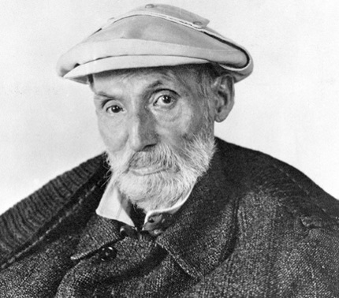
Name: Pierre-Auguste Renoir
Years: 1841, France - 1919, France
Nationality: French
Associated Movement: Impressionism
Teacher: Charles Gleyre
Art Institution: École des Beaux-Arts, Paris, France
Pieces Listed:
- Dance at Moulin de la Galette, 1876
- At the Theater, 1876-77
- The Luncheon of the Boating Party, 1880-81
- Lakeside Landscape, 1889
- Self-Portrait with a White Hat, 1910
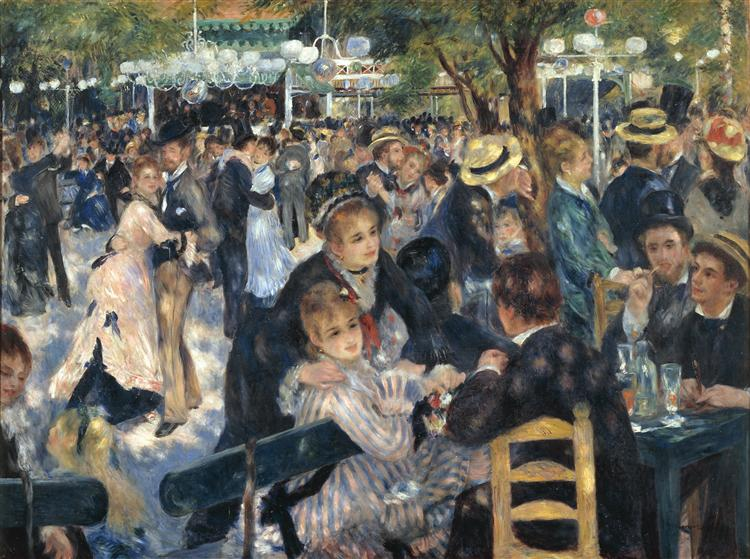
 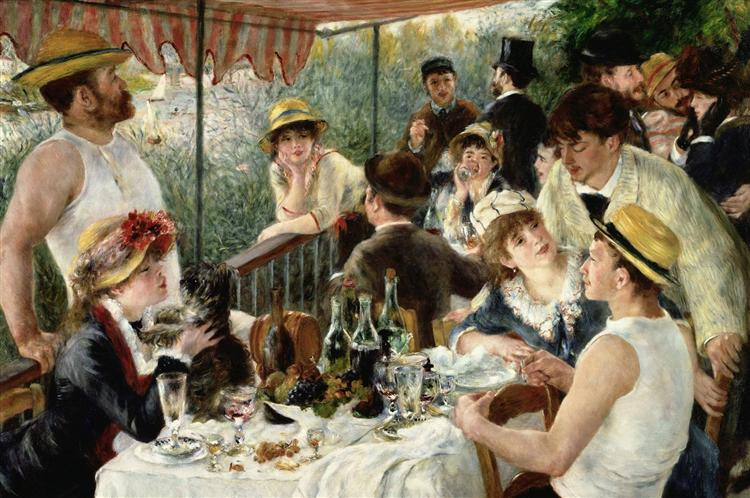
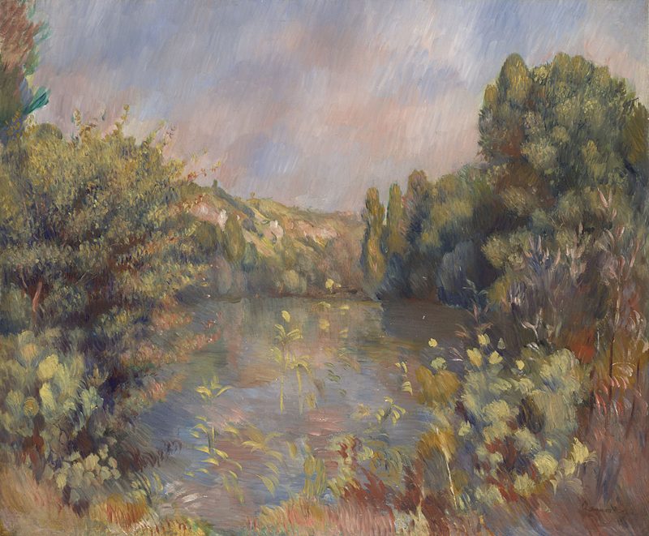
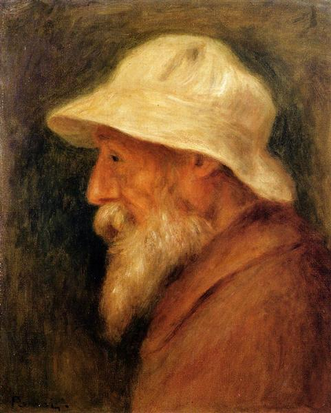
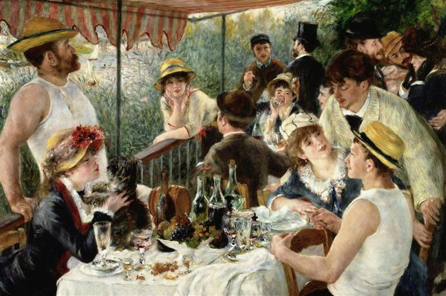
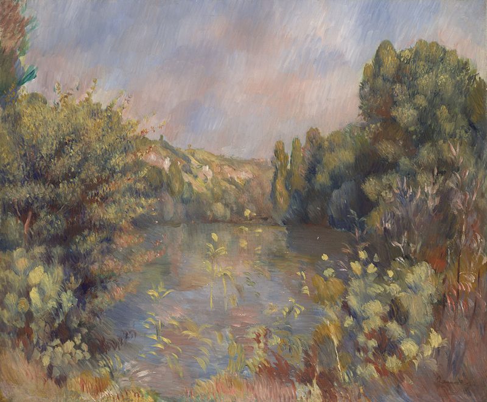
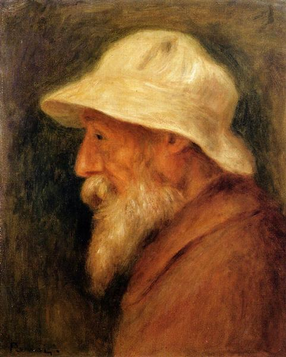
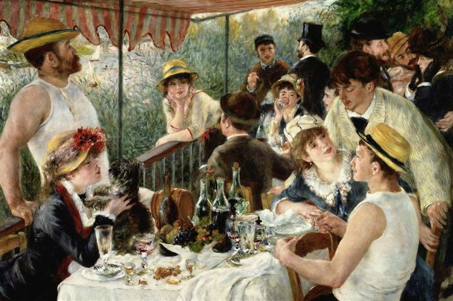
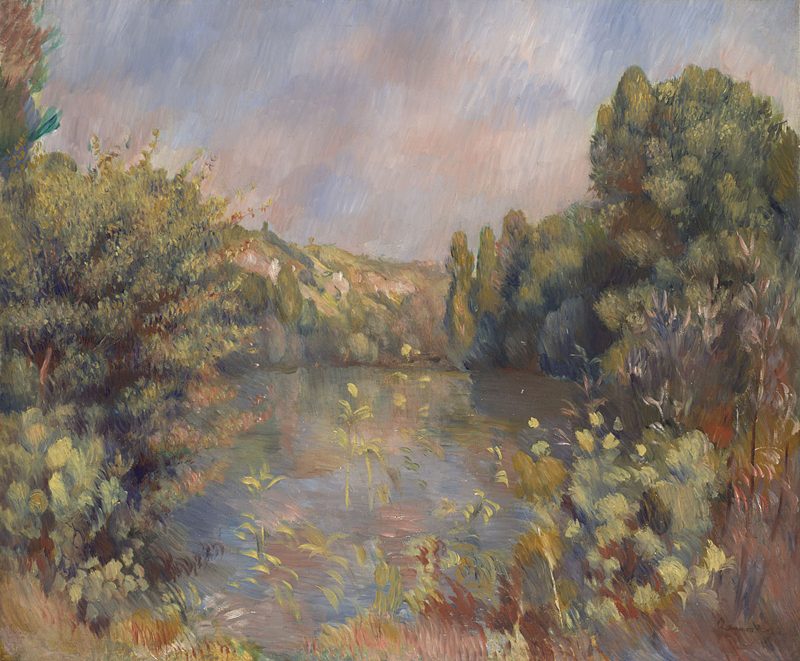
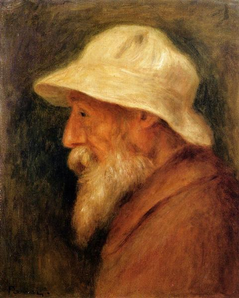
Week Two

Name: Claude Monet
Years: 1840, France - 1926, France
Nationality: French
Associated Movement: Impressionism
Teachers: Eugene Boudin, Charles Gleyre
Pieces Listed:
- Spring Flowers, 1864
- Autumn on the Seine at Argenteuil, 1873
- The Museum at Le Havre, 1873
- Poplars on the Epte, 1891
- Irises in Monet's Garden, 1900
- Water Lily Pond, 1917
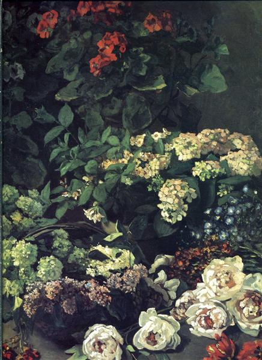
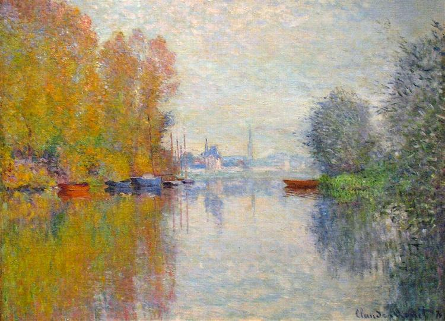
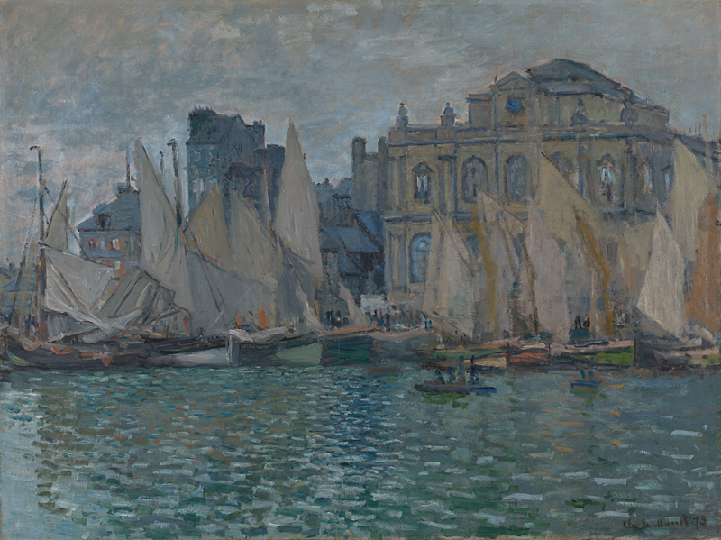
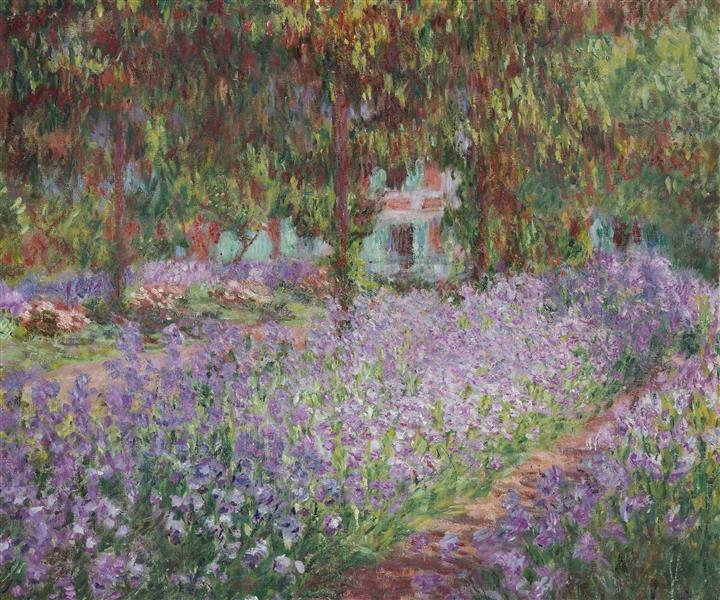
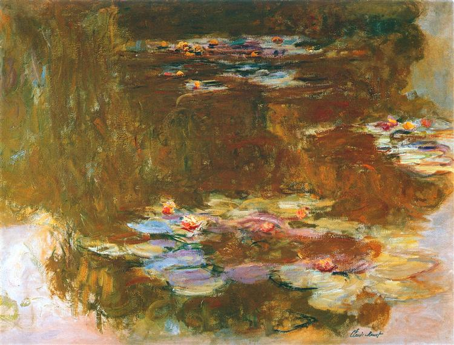
Week Three
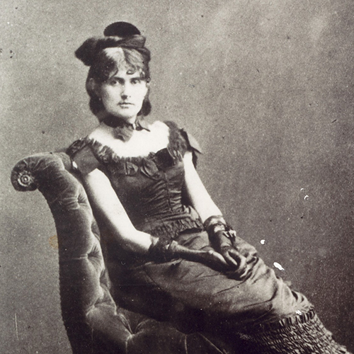
Name: Berthe Morisot
Years: 1841, France - 1895, France
Nationality: French
Associated Movement: Impressionism
Pieces Listed:
- The Old Track to Auvers, 1863
- Young Lady Seated on a Bench, 1864
- Julie Daydreaming, 1894
- Roses, 1894
- Woman and Child, 1894
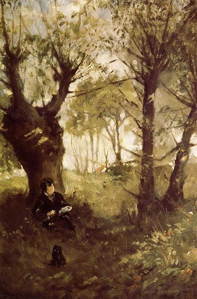
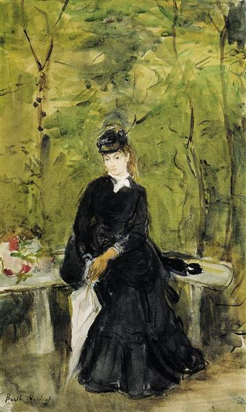
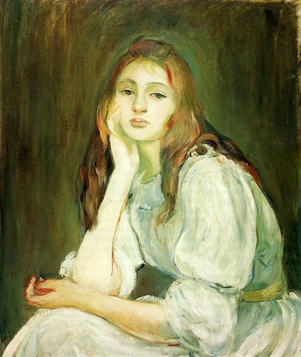
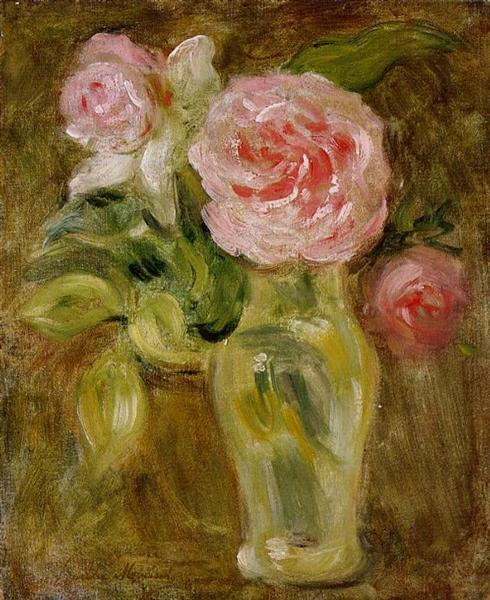
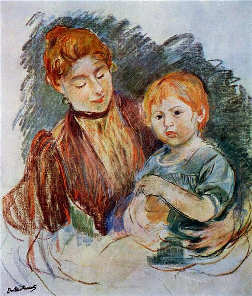
Week Four
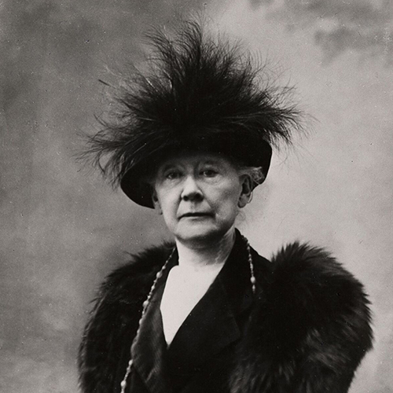
Name: Mary Cassatt
Years: 1840, USA - 1926, France
Nationality: American
Associated Movement: Impressionism, Realism
Art Institutions:
- École des Beaux-Arts, Paris, France
- Pennsylvania Academy of the Fine Arts, Philadelphia, PA
Pieces Listed:
- Woman on a Striped Sofa with a Dog, 1875
- Lilacs in a Window, 1880
- Woman and Child Seated in a Garden, 1881
- Woman in Black, 1882
- Portrait of an Elderly Lady, 1883
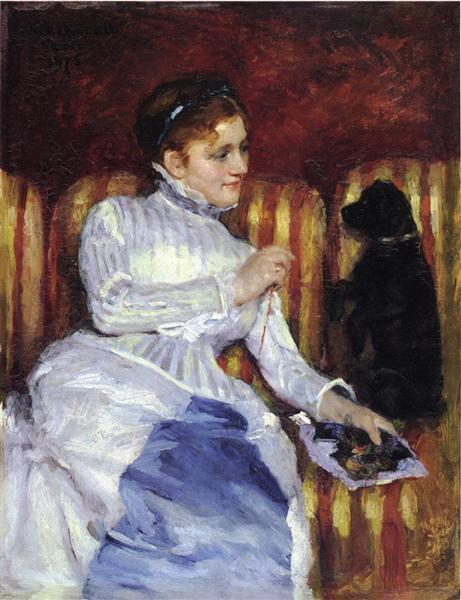
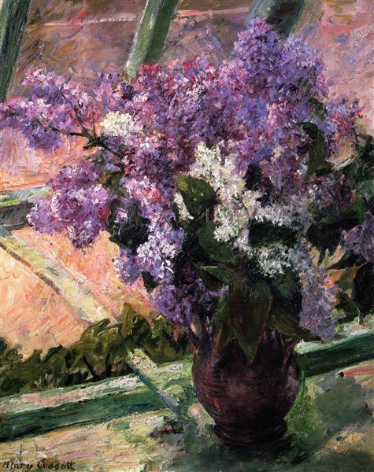
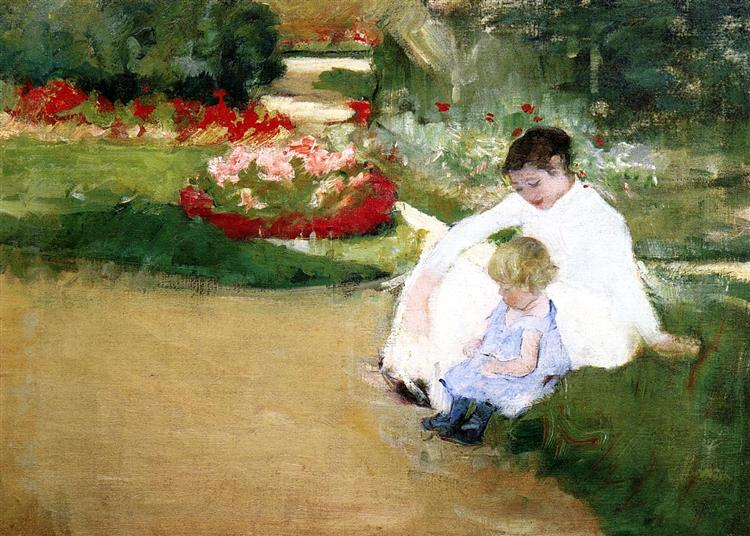
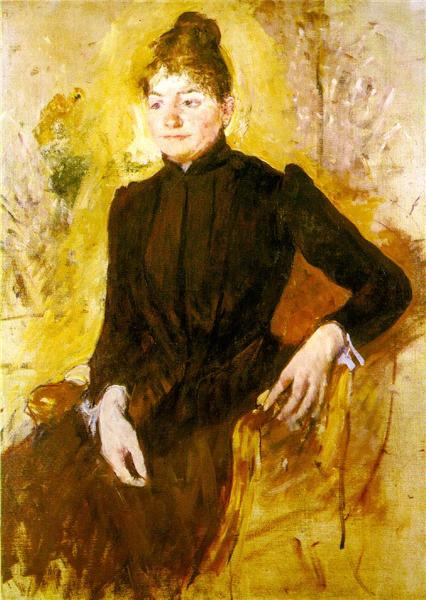
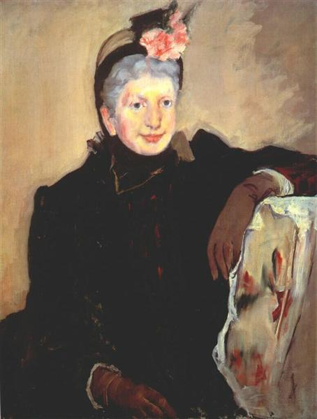